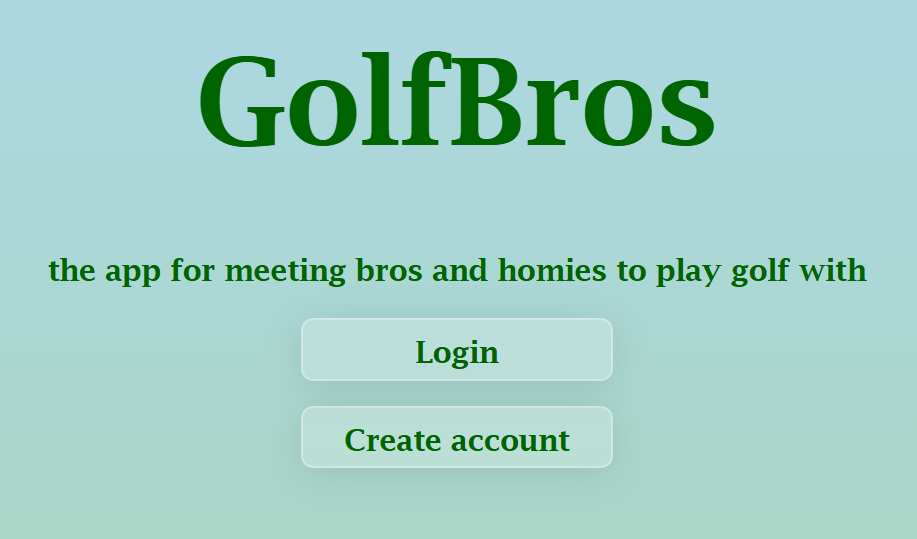

GolfBro
A web app for golfers to meet and chat in real time.
What I learned:web development, APIs , authentication, databases
made with: nodeJs, EJS, express, MySQL, html, css, socket.IO, cloudinary
source codeWaypoints

A Unity asset that lets developers make GameObjects follow custom paths.
What I learned:software design, clean coding
made with: Unity
source codeLost in Hell
A game made for the GDM studios competition of winter 2025.
What I learned: : teamwork, software design
made with: Unity
source codeRush Hour

A recreation of Rush Hour made during CEGEP. Includes level selection (3 difficulties), collision and success detection, and drag-and-drop car movement.
What I learned: reading files, JavaFX event handling
made with: javafx
source codeCrossword game

A crossword game remake made during CEGEP, with level selection and three themes.
What I learned: reading files, JavaFX event handling and designing UI
made with: javafx
source codeAim trainer

Minigame where you can train your aim in an FPS environment. It includes extensive personalization
What I learned: Improved Unity skills
made with: Unity, C#
source codeChess logic

A fully functional chess game, playable by two players on the same computer
What I learned: Improved Unity skills
made with: Unity, C#
source codeTemperature guesser

Minigame where you guess the temperature of a city that you choose. Features include being able to have a list of favourite cities
What I learned: Using an API, file writing/reading
made with: python, TKinter, OpenWeatherMapAPI
source codegeographic quiz

Quiz about countries, cities and capitals. Features include a personalized quiz, map to guess the location.
What I learned: Using an API, file writing/reading, geocoding.
made with: python, TKinter, Geonames API
source code